New reading tools
Lecture cheat sheets 0–20 · Syntax and notation reference. Each textbook chapter now has an expandable, numbered code walkthrough with an explanation beside every line.
Read the textbook with a guide beside you
This reader follows Hakjoo Oh’s Principles of Programming Languages (English draft, 31 August 2026) in its own nine-chapter order. Section numbers and PDF page links match the downloaded book. Explanations, Mermaid diagrams, and worked solutions here are original companion material; use the linked PDF whenever you want the author's exact wording, figures, or notation.
How to read: check the chapter’s prerequisite, read a section, and follow its thinking flow. Answer the Predict checkpoint before revealing the reasoning and common trap. These checks are original practice prompts, separate from numbered textbook exercises. Use Syntax beside you for an unfamiliar symbol without leaving the section, then attempt the chapter’s problems before opening solutions. Highlighted terms link to precise definitions. A section's Read in the PDF link takes you to its source page. Textbook problem numbers are separate from the course homework numbers.

View Mermaid source
flowchart TD
accTitle: The textbook's nine-chapter learning path
accDescr: Inductive definitions support OCaml, interpreters, memory models, type analysis, and lambda calculus.
A["1. Define syntax and prove properties"] --> B["2. Express recursion in OCaml"]
B --> C["3. Interpret names with environments"]
C --> D["4. Add closures and recursion"]
D --> E["5. Build the Fun language"]
E --> F["6. Separate names from changing memory"]
F --> G["7. Follow pointers and collect garbage"]
E --> H["8. Predict types before execution"]
D --> I["9. Translate to lambda calculus"]
Part I — The tools for thinking
1. Induction · PDF pp. 11–32
- 1.1 Inductive Definition of Sets
- 1.2 Inductive Definition of Programming Languages
- 1.3 Inductive Proof
You will be able to: read construction rules, build a derivation, and prove a property by following the same cases. Chapter 1 supplies worked examples, not a separate numbered exercise set.
2. Functional Programming · PDF pp. 33–96
- 2.1 OCaml Basics
- 2.2 Recursive Functions
- 2.3 Higher-Order Functions
- 2.4 Exercises: all 12 problems and solutions
You will be able to: turn data constructors into matching branches, choose a decreasing recursive argument, and express list computations as folds. Problem 10 has five subparts; each has both fold directions in the solution file.
Part II — Build a language, one feature at a time
3. Variables and the Environment · PDF pp. 97–117
- 3.1 Syntactic Structure
- 3.2 Semantic Structure
- 3.2.1 Environment
- 3.2.2 Inference Rules
- 3.3 Implementation
You will be able to: translate each rule into an evaluator case and explain shadowing. This chapter gives a worked implementation rather than an unanswered numbered problem.
4. Defining and Calling Functions · PDF pp. 119–145
- 4.1 Syntactic Structure
- 4.2 Semantic Structure
- 4.2.1 Static Scope
- 4.2.2 Dynamic Scope
- 4.2.3 Recursive Functions
- 4.3 Implementation: static and dynamic evaluators
5. Functional Language Fun · PDF pp. 147–160
6. State Changes · PDF pp. 161–192
- 6.1 First Approach: explicit references
- 6.1.1 Syntax · 6.1.2 Semantics
- 6.2 Second Approach: implicit references
- 6.2.1 Syntax · 6.2.2 Semantics
- 6.2.3 Function Call Method
- 6.3 Implementation: both interpreters
7. Pointers and Memory Management · PDF pp. 193–221
- 7.1 Records
- 7.2 Pointers
- 7.3 Memory Management
- 7.3.1 Manual Memory Reclamation
- 7.3.2 Automatic Memory Recycling
- 7.4 Implementation: all four tasks
Part III — Reason about programs and their foundations
8. Static Type Systems · PDF pp. 223–276
- 8.1 Target Language
- 8.2 Type · 8.3 Type Environment
- 8.4 Type Inference Rules
- 8.5 Type Checker Implementation Approach
- 8.6 Automatic Type Inference Algorithm
- 8.6.1 Generating Type Equations
- 8.6.2 Solving Type Equations
- 8.7 Polymorphic Type Systems
- 8.8 Implementation: generator, solver, and Fun extension
9. Lambda Calculus · PDF pp. 277–292
- 9.1 Lambda Calculus
- 9.2 Converting to a Lambda Expression
- 9.3 Implementation: reducer and translator
Keep the three kinds of material distinct
| Material | Where to find it | What it is for |
|---|---|---|
| Textbook reader | The nine chapters above | Read in the PDF's section order, with definitions and reasoning diagrams |
| Textbook solutions | §2.4 and each chapter's Implementation section | Original worked solutions to the textbook's own tasks |
| Course homework | Homework map | The separately numbered 2026 assignments and their precise specifications |
The concept chapters remain available for shorter explanations and interactive traces. Exceptions and classes appear in course slides but are not separate chapters in this English PDF.
Source and solution notes
The source is a draft. Where a problem is ambiguous, the guide states the interpretation before solving it. In particular: §7.4's printed evaluator result needs an internal value-and-memory pair; §8.8's Fun extension needs an explicit equality policy; §9.2 initially encodes natural numbers and uses normal order. These are explained in their chapters.